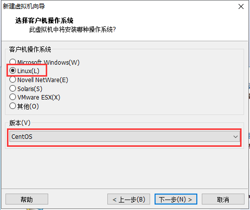
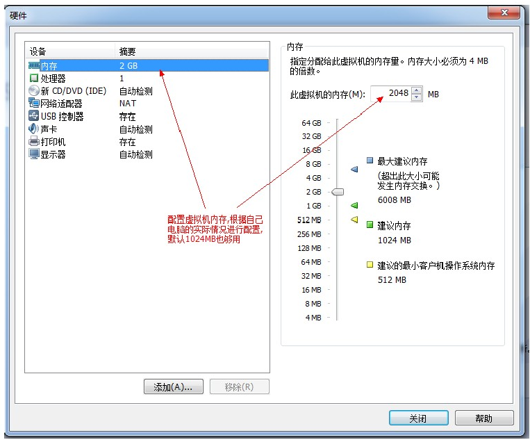
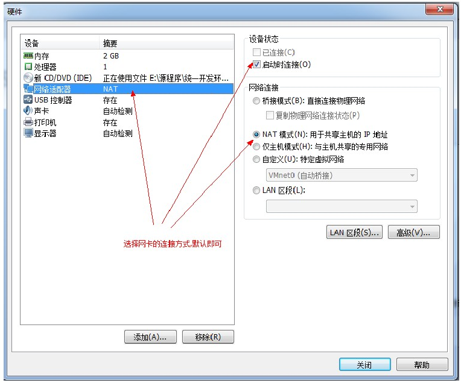

一、VMware安装
步骤1：运行“VMware-workstation-full.exe”
步骤2：引导页面，下一步
步骤3：统一许可，下一步

步骤4：安装类型——自定义

步骤5：修改安装位置

步骤6：组件配置（默认）

步骤7：取消软件安装

步骤8：用户体验改进计划（自定义）
步骤9：创建快捷方式（默认）

步骤10：配置完成，点击“继续”安装
步骤11：输入许可证密码
1）运行：“VMware workstation 注册机.exe”
2）复制序列号并输入许可
1）运行：“VMware workstation 注册机.exe”
2）复制序列号并输入许可
步骤12：完成
二、VMware配置
步骤1：新建虚拟机

步骤2：配置类型——典型

步骤3：创建空白磁盘
步骤4：选择安装系统和相应的系统版本

步骤5：选择虚拟机安装位置（自定义）

步骤6：指定自盘容量（默认）
步骤7：硬件配置




配置完成后点击关闭，然后选择完成
然后返回主页面，可开启新建好的虚拟机
三、Linux安装（CentOS6为例）
1.1启动虚拟机
1.2选择安装项
1.2选择安装项
扩展：不同的选择解释
Install or upgrade an existing system ：安装或升级现有系统（默认项），采用CentOS的图行安装程序
Install system width basic video driver : 使用基本驱动安装程序。如果显卡等驱动不能成功安装时，可以使用此项。
Rescue installed system : 救援安装的系统。如果不能正常启动时，使用此项。
Bootfrome local derive : 从本地驱动器启动
Memory test : 内存测试
Install or upgrade an existing system ：安装或升级现有系统（默认项），采用CentOS的图行安装程序
Install system width basic video driver : 使用基本驱动安装程序。如果显卡等驱动不能成功安装时，可以使用此项。
Rescue installed system : 救援安装的系统。如果不能正常启动时，使用此项。
Bootfrome local derive : 从本地驱动器启动
Memory test : 内存测试
1.3跳过检查
使用”tab“键，选择”skip“。回车enter
使用”tab“键，选择”skip“。回车enter
检查安装盘是否完整。一般不用检查，如果点击”ok“，比较耗时
1.4欢迎界面
1.5选择语言环境
1.6选择键盘类型（默认）
1.7选择存储设备
选择”基本存储设备“（默认）
选择”基本存储设备“（默认）
存储设备解释
基本存储设备：作为安装空间的默认选择，适合哪些不知道应该选择哪个存储设备的用户。
指定的存储设备：需要用户将系统安装指定到特定的存储设备上，可以时本地某个设备，当然也可以时SAN（存储局域网）。 通过允许用户添加fCoE/iSCSI/zFCP磁盘，并且能够过滤掉安装程序应该忽略的设备。
基本存储设备：作为安装空间的默认选择，适合哪些不知道应该选择哪个存储设备的用户。
指定的存储设备：需要用户将系统安装指定到特定的存储设备上，可以时本地某个设备，当然也可以时SAN（存储局域网）。 通过允许用户添加fCoE/iSCSI/zFCP磁盘，并且能够过滤掉安装程序应该忽略的设备。
1.8格式化硬盘
选择”是，忽略所有数据“
选择”是，忽略所有数据“
1.9设置网络

1.10设置时区
选择”亚洲/上海“
选择”亚洲/上海“
1.11设置密码
Linux根账号为：root
Linux根账号为：root
1.12磁盘分区配置
1.12.1选择安装类型
可选”使用所有空间“
1.12.1选择安装类型
可选”使用所有空间“
各种配置解释
1.使用所有空间（Use All Space）：删除您硬盘上的所有分区（这包括如Windows的NTFS分区VFAT或其他操作系统创建的分区）。
2.替换现有的Linux系统（Replace Existing Linux System）：以消除先前的Linux安装创建的分区。这不会删除其他分区（如VFAT或FAT32分区），你可能 对您的硬盘驱动器。
3.缩小现有系统（Shrink CurrentSystem）：调整当前分区。
4.使用剩余空间（Use Free Space）：保留您当前的数据和分区并安装在未使用的存储驱动器上。注意：必须保证有走狗的可用空间。
5.创建自定义布局（Create Custom Layout）：手动存储设备进行分区并创建自定义布局。
1.使用所有空间（Use All Space）：删除您硬盘上的所有分区（这包括如Windows的NTFS分区VFAT或其他操作系统创建的分区）。
2.替换现有的Linux系统（Replace Existing Linux System）：以消除先前的Linux安装创建的分区。这不会删除其他分区（如VFAT或FAT32分区），你可能 对您的硬盘驱动器。
3.缩小现有系统（Shrink CurrentSystem）：调整当前分区。
4.使用剩余空间（Use Free Space）：保留您当前的数据和分区并安装在未使用的存储驱动器上。注意：必须保证有走狗的可用空间。
5.创建自定义布局（Create Custom Layout）：手动存储设备进行分区并创建自定义布局。
1.12.2格式化
1.13选择系统安装类型
各个类型解释
Desktop：基本的桌面系统，包括常用的桌面软件，如文档查看工具。
Minimal Desktop：基本的桌面系统，包含的软件较少。
Minimal：基本的系统，不包含有任何可选的软件包。
Basic Server：安装的基本系统的平台支持，不包含桌面。
Database Server：基本系统平台。加上MySQL 和 PostgreSQL 数据库，无桌面
Web Server：基本系统平台，加上PHP，Web Server，还有MySQL和PostgreSQL 数据库的客户端，无桌面
Virtual Host：基本系统加虚拟平台
Software Development Workstation：包含软件包较多，基本系统，虚拟化平台，桌面环境，开发工具。
Desktop：基本的桌面系统，包括常用的桌面软件，如文档查看工具。
Minimal Desktop：基本的桌面系统，包含的软件较少。
Minimal：基本的系统，不包含有任何可选的软件包。
Basic Server：安装的基本系统的平台支持，不包含桌面。
Database Server：基本系统平台。加上MySQL 和 PostgreSQL 数据库，无桌面
Web Server：基本系统平台，加上PHP，Web Server，还有MySQL和PostgreSQL 数据库的客户端，无桌面
Virtual Host：基本系统加虚拟平台
Software Development Workstation：包含软件包较多，基本系统，虚拟化平台，桌面环境，开发工具。
1.14安装开始并重启
1.15登录
输入用户名，回车
输入密码回车（注意：密码输入看不到）
输入用户名，回车
输入密码回车（注意：密码输入看不到）
登陆成功